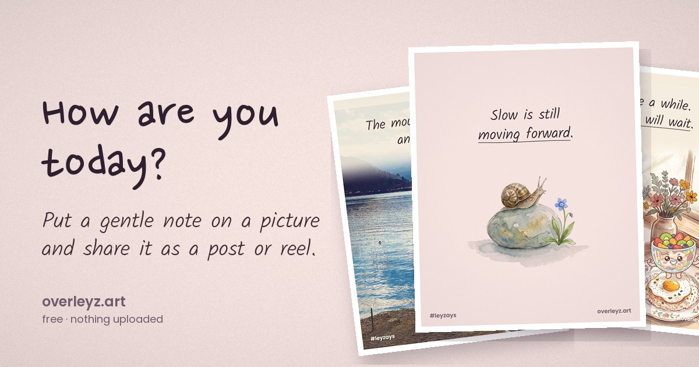

The paintings
Soft gouache-and-watercolour scenes painted for leyzays — the same art behind its quote posts, with the words left off so yours can go on.
say how you feel — softly or loudly · by leyzays

overleyz puts words on pictures. Choose how you feel, pick a painting, a travel photo or a picture of your own, add a note and a few stickers, and share it as an Instagram post or a short reel.
Soft gouache-and-watercolour scenes painted for leyzays — the same art behind its quote posts, with the words left off so yours can go on.
Real photos from Ley’s own trips (@traveleyz) — Kyoto to the Grand Canyon, Paris to Palawan. No stock photos.
Cocoa, Butterscotch Belle, Chippie, Melty, Tutti Frutti and the rest of the dessert cast from The Sweetest Bake-Off, in brave, worried, joyful and proud poses.
leyzays notes are written by Ley. Classic quotes come only from books, poems and scripture in the public domain — Shakespeare, Austen, the Brontës, Dickinson, Thoreau, Gibran, Montgomery, Alcott and more — with the author and work printed underneath. We leave out movie lines and quotes from living people: they’re protected, and too many are misattributed online.
Yes. Every picture carries a small #leyzays and overleyz.art mark in the corners — that’s the only ask.
Instagram doesn’t let websites post for you. On a phone, tap Share and choose Instagram — your picture or reel opens there ready to post. On a computer, save it and upload it.
Some browsers can only record WebM. Instagram prefers MP4 — Safari on iPhone and Chrome on Android or desktop record MP4.
Every tune is an original leyzays song, composed for the notes on leyzays — so your reels are safe to post.
Please don’t. The paintings, photos, characters and leyzays notes are © Ley Z and are shared here for personal posts only. If you’d like to use them for something else, ask first.
You can type anything into the words box for your own personal post. Please credit the person you’re quoting.
Notes and printables at leyzays, travel on @traveleyz, and the Sugar Valley story at sugarvalley.